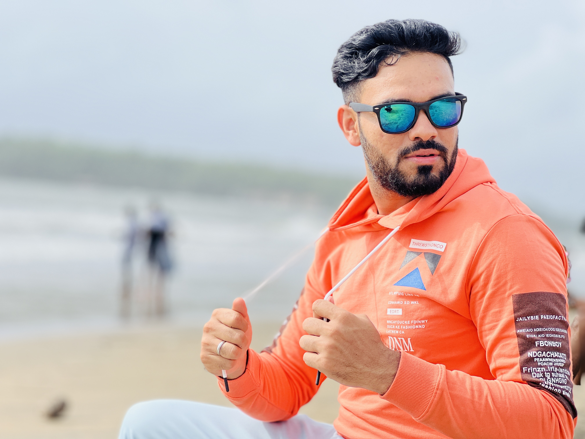

Ashrafali Abed

asrf786@gmail.com | 07865210011 | Leeds
BE Computer Science & Engineering
Objective:
Highly motivated and adaptable full-stack developer with a solid foundation in HTML, CSS, and JavaScript. Leveraging 10 months of experience as a customer service advisor, I possess excellent communication, problem-solving, and teamwork skills. Eager to contribute my technical skills and enthusiasm for web development to a dynamic development team as a full-stack developer.
Professional Experience:
Customer Service Advisor (BT consumer Group - Leeds) - February 2023 -Current
- Provided exceptional customer support and assistance to broadband customers, ensuring their technical and non-technical issues were resolved promptly.
- Demonstrated exceptional communication skills, ensuring effective handling of customer inquiries and complex problems.
- Collaborated with cross-functional teams to optimize customer service processes and enhance efficiency.
- Maintained consistently high levels of customer satisfaction, receiving positive feedback.
- Adapted quickly to changing priorities and managed high-stress situations with professionalism.
Technical Skills:
Front-End Technologies: HTML, CSS, JavaScript
Back-End Technologies: Node.js
Version Control: Git and GitHub
Education:
- 2010:
Higher Secondary certificate examination (Science Stream) – INDIA
GSCE Maths equivalent in UK
(Comparable to GSCE/AS level (RQF level 3) in the UK Approved by ECCTIS UK)
-
2010-2014:
• Computer Science and Engineering (Bachelor of Engineering)
Gujarat Technological University, India
(Comparable to the bachelor (honours) degree in the UK Approved by ECCTIS UK)
Grade: 75.80% - First class with Distinction
-
2015-2017:
• Playing Cricket for National Cricket Club & Baroda Cricket Association, India
• Coaching cricket to under 17 years players of Cricket club based in India
-
2018-2021:
• Preparation of Civil Services Examination in Gujarat, India.
• Teaching part time General Studies subject to Civil services Aspirant
Hobbies:-
- I like to read, travel, and play sports to keep fit and this also helps me to maintain my team working skills and enjoy the company of others.
- I am adventurous, outgoing and social.